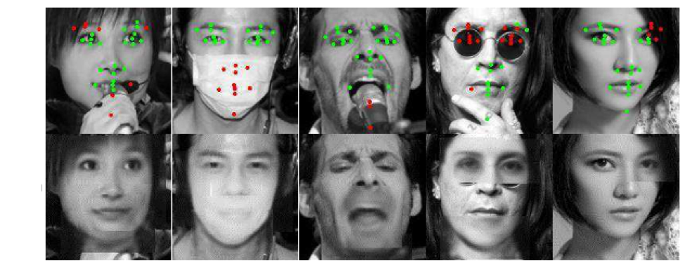

A common problem in machine learning is image recognition. 20 years ago it was impossible to program a computer to reliably recognize a cat in an image, or to differentiate between a cat and a dog. Today these tasks are considered trivial. Typically, an image recognition task is divided into two parts: training, and processing. During training, a large number of example images is presented to an algorithm (model), which tries to guess the object in each image. Every time it guesses wrong, the parameters are adjusted to minimize the error. A neural network is one class of such algorithms. It consists of multiple nodes (“neurons”), which are organized in layers - starting with an input layer accepting the image pixel values, and ending with an output layer, with one output per possible object type. Intermediate layers are called “hidden” layers. Layers of nodes are connected: in the simplest case, each node in one layer is connected to all neurons in the layer before, and layer after. The connections can be represented as matrices of weights, which constitute the parameters of the model, encoding the “knowledge” of the network. Each input pixel is multiplied by a weight, and each node performs sum of products of all incoming weights and pixel values. As the resulting output value goes through some non-linear function (such as a sigmoid), it’s called an activation of the node. Each neuron in a layer produces activation signals, which then become inputs to the next layer.
This style of training is called “supervised learning”, because it involves showing the network images with known answers. When the network has been trained, it should be able to correctly classify previously unseen images (processing, or inference stage).
Sometimes, there’s a lack of labelled (manually classified) images, but plenty of unlabeled ones. In this case, unsupervised learning algorithm is preferable. One example of such algorithm is an autoencoder. An autoencoder is a type of a neural network where the desired output is the same as input, that is, an input image goes through intermediate layers, but instead of a guess at the class of the object, the network attempts to restore the input pixel values. This is useful because the hidden layers of the network produce activations, which can be interpreted as an encoded representation of the input image. For example, if an input image is 64x64 pixels, and the middle layer has 100 neurons, then the network encoded a 4,096-pixel image as a 100 valued vector. If this network is able to restore the original image using just 100 nodes in the middle layer, then we can use it to restore input images even when they are partially corrupted - the encoded representation generated by the hidden layers is robust, because it extracts high level features in the input images.
In the picture below, the top row shows partially obscured images of a face, which serve as an input to an autoencoder, and the bottom row shows the result of the reconstruction:
Until about 2012, the lack of processing power made it difficult to extract good features from images, because this task requires large neural networks. In turn, large networks require a lot of input data to train successfully. That’s why when researchers at Stanford partnered with Google engineers: Google has lots of processing power, and lots of data. As a result, Andrew Ng’s team at Standford was able to train a very large network, using a very large dataset of images. One particular goal of their project was to find out if it was possible to extract very high level features.
A typical image can be described in a hierarchical manner: low level features, such as dot patterns, lines, curves, or corners of different orientation, are combined into more complex shapes, such as circles, squares, or textures, and these shapes in turn can be combined into even higher level features, such as basic car shapes, faces, houses, etc. Previously, only low level features could be extracted from images, however, it was known from neuroscience that individual neurons in a human brain could “learn” to respond strongly when a particular complex image is seen. Therefore, if a particular node in the middle layer of an autoencoder could respond with a strong activation when a network was shown a face, it would mean that the network is capable of extracting such high level features.
A novel dataset was constructing by extracting frames (200x200 pixel color image) from 10 million YouTube videos, one frame per video. Both this dataset, and the network were about 100 times larger than any previously used datasets or networks. To process this much data, a large cluster was built at Google, with 1000 processors, 16 cores each. The network (deep sparse convolutional autoencoder with pooling and local contrast normalization - 9 layers, and 1 billion trainable weights), was trained for three days using only unlabeled data, and in the end it was able to learn the high level concepts, such as a face (human, as well as cat), and a human body. The reason for learning these particular features is simple: a typical YouTube video is very likely to contain many human faces, human bodies, and cats (pictures on the right below shows the images which caused high activations of the “face” neuron, picture on the left shows the artificially constructed input image which would cause the highest activation of the neuron).
This breakthrough1 in machine learning could only be achieved by exploiting a large amount of parallelism available in neural network algorithms. In order to take advantage of the 16,000 cores, both data and model parallelism was implemented.
A single instance of the algorithm partitioned neurons (and corresponding weights) across 169 machines (16 cores each). Weights were divided according to the locality of the image, for example, weights connected to left part of the image are stored on machine 1, central part weights are on machine 2, and so on. A custom software framework, called “DistBelief”2, was written by a team led by Jeff Dean, creator of MapReduce, this framework later became known as “TensorFlow”3, recently open sourced by Google. DistBelief managed all necessary communication between different machines of the same algorithm instance.
The dataset was divided into 5 parts, so that 5 separate instances of the model could be trained simultaneously on fractions of the dataset. 256 centralized parameter servers were used to synchronize the parameters. Further, each portion of the dataset was processed 100 images at the time (by each instance), so that before processing each 100 image batch, each instance would contact the parameter servers to get the updated copy of the parameters, and then send them the parameter updates. Parameter servers were divided into groups, where each group was responsible for storing and updating its own fraction of the parameters. As a result, each machine only needs to communicate with a few specific parameter servers which store the relevant weights, and there’s also fault tolerance where if a single machine fails, the rest continue the training process. Obviously, this asynchronous training method introduces some non-determinism and stochasticity into the computation (for example, instances might use slightly out of date versions of parameters relative to each other), however, neural networks seem to tolerate this type of “interference” well in practice.
Finally, multiple cores in each processor were used for task parallelism, where separate groups of cores would be reading data, sending (or writing) data, and performing arithmetic computations. At every time instance, these groups work in parallel to load data, compute numerical results and send to network or write data to disks.
By deploying multiple forms of parallelism – task parallelism via multithreading to utilize multiple cores within a single processor, model parallelism via message passing to utilize multiple processors, and data parallelism to utilize computation of multiple instances of the same model – enabled the researchers to achieve a remarkable breakthrough in machine learning.
P.S. One year after these papers were published, a different team of researchers have reproduced these results4 using a cluster of just 3 machines (as opposed to 1,000 in the original work), with each machine deploying 2 CPU (4 cores each) and 4 GPU cards. The training process took the same amount of time (3 days). Communication between the machines in their setup was done with MPI. This example of dramatic simplification of the computational hardware allowed many smaller teams to start looking into scaling up their machine learning algorithms.